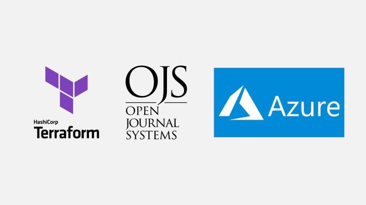
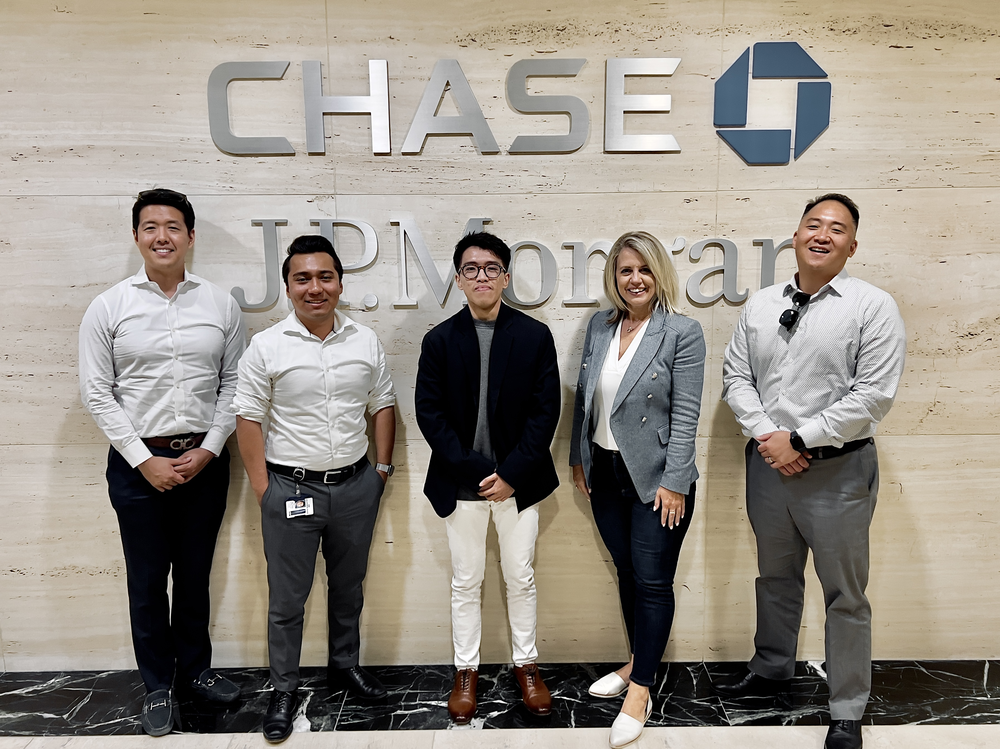

BenjaminNguyen
Hi! My name is Benjamin (Hung) Nguyen. I'm a Computer Science
student at California State University, Fullerton, with a passion
for software engineering and a love for problem-solving.
Always up for a challenge and excited to collaborate with like-minded
folks—feel free to reach out anytime!
Experience
Open-Source Software Engineer at PKG
During my six-week internship with CodeDay and the Computing Talent Initiative (CTI), I worked alongside two teammates to automate the deployment of the open-source Open Journal System (OJS) on Microsoft Azure using Terraform. We developed modular Terraform configurations to provision infrastructure components, including virtual machines, MySQL servers, and a secure 4-tier virtual network architecture. Additionally, we implemented Bash scripts to automate dependency installation and address deployment challenges like Azure region limitations and file permissions. By ensuring scalability, consistency, and security, making it easier for our solution streamlined OJS deployment for academic institutions worldwide—especially in developing regions—to adopt and manage OJS efficiently.
Summer Analyst at JPMorgan Chase
While working with JPMorgan Chase’s Government Banking team, I had the opportunity to dive into municipal finance, leveraging innovative in-house tools to uncover strategic opportunities. Through detailed analysis and research, I identified a $1.8 million bond refunding opportunity for the Aquarium of the Pacific in Long Beach, California—highlighting a path to significant cost savings and financial optimization. This experience allowed me to bridge technical tools with real-world impact, supporting a meaningful project for a renowned institution.
Projects

Tripsplit
Managing group expenses can quickly become a headache, which inspired me to create Tripsplit—a full-stack mobile application designed to simplify expense management with seamless precision. Built with React Native and Expo, Tripsplit combines modern mobile development with powerful cloud infrastructure, leveraging AWS services (S3, EC2, CloudWatch) for scalability and Amazon Textract for smart receipt OCR. At its core, a sophisticated expense-splitting algorithm ensures fair and transparent cost-sharing, while Firebase enables real-time updates and smooth synchronization across devices.
React Native
Express.js
AWS
Synchronize
Juggling events and tasks can feel overwhelming, so I built an iOS application that seamlessly combines calendar and reminder functionalities to simplify organization and enhance productivity. Using Swift and CoreData, I ensured robust and persistent data storage, while integrating EventKit and CalendarKit to synchronize calendar events and to-do tasks effortlessly. The result is a unified, intuitive view of commitments, empowering users to stay on top of their schedules with confidence and clarity.
Swift
CoreData
EventKit
Vibe Bot
To make listening to music with friends more seamless, I created a Python-based Discord music bot 'Vibe Bot' that brings smooth music streaming right into Discord servers. Using discord.py for interactions and yt-dlp for YouTube video extraction and playback, the bot enables features like YouTube search, random track selection, playback queue management, and history tracking. I integrated YouTube data retrieval through RESTful API calls with the requests library and ensured secure handling of environment variables with dotenv. By leveraging asynchronous programming with asyncio, the bot efficiently manages I/O-bound tasks, delivering a responsive and enjoyable music experience for users.
Python
discord.py
RESTful API